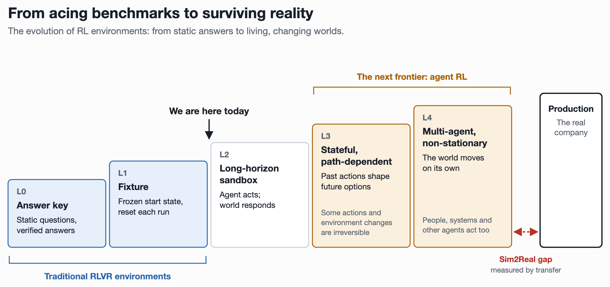

The Sim2Real Gap Is Coming for AI Agents
Robotics spent decades learning that the environment, not the algorithm, is the hard problem. AI agents are next.
I've seen this movie before. The bottleneck in AI agents is no longer intelligence; it's contact with reality.
I've spent years building the worlds AI learns in. I helped build AWS DeepRacer, one of the largest Sim2Real experiments ever run, and I've worked on real enterprise RL environments for other robotic applications, for chaos engineering, for oil and gas exploration and in the LLM world: RLHF to RL fine-tuning. Across all of them, the same lesson kept repeating: the algorithm is rarely the hardest problem. The environment is.
The first time I learned that, it was from a car the size of a shoebox. In 2018, with AWS DeepRacer, we trained a 1/18th-scale car to race using reinforcement learning entirely in simulation. Driving in simulation was the easy part; surviving a real track was not. One of our most surprising findings was that simply reversing the car's direction during training did more for transfer than injecting random noise. It told us the car needed to experience more of the real scenarios it would face, not just noisier versions of the same one. The algorithm was fine. We just hadn't taught the car enough about reality.
Every AI system that has impressed us learned inside a world we built for it: Go, StarCraft, the internet itself. Now we're asking agents to leave those worlds and act inside real software, real companies and real economies, where the stakes are real and nothing resets. The gap between where an AI trains and where it acts is about to become the defining problem of the field. Robotics has fought it for three decades.

What Sim2Real is, and why it's back
Sim2Real is the craft of training an agent policy somewhere cheap, fast and safe, a simulator, and having it work somewhere expensive, slow and unforgiving: the real world. The distance between the two is the Sim2Real gap. Physics is approximated, cameras see glare the renderer never drew, motors lag, and reality is wider and weirder than anything you modeled, so a policy that's superhuman in simulation can be useless the moment it touches the world, and the culprit is almost never the learning algorithm.
For most of the last decade, Sim2Real was a robotics problem. As LLMs become agents taking on real-world work, that's changing, and the version coming for them is different from the one robots faced, and harder to specify. Robots have to survive incomplete models of physics. Agents have to survive incomplete models of organizations: what other people will do, how systems respond, when permissions change, how approvals happen and how exceptions propagate. The hard part of enterprise Sim2Real isn't reproducing software interfaces. It's reproducing the behavior of the world behind them.
Here's the example I'll keep coming back to: one incident that passes through two agents.
From the coding side. A developer asks a coding agent to fix intermittent checkout failures: under load, calls to the payment processor time out and the checkout errors. In a typical RL environment, the agent gets a frozen repository, a failing test and a sandbox. It traces the failures to the timeouts, wraps the call in retry logic, and the tests pass. Perfect score. Now ship that fix. In production, the payment processor sometimes completes a charge and then times out, something the mocked processor in the test suite never did. Retrying without an idempotency key charges the customer twice. The canary looks healthy at first; then traffic climbs, duplicate charges appear and an alert fires. Meanwhile, another engineer has changed the worker configuration, so it isn't even obvious whose change caused it. The agent now has to investigate, roll back safely and deal with payments that already went through. The code was correct according to the tests. The outcome was not.
The story doesn't end when the coding agent ships its fix. The duplicate charge is now somebody else's problem. A customer opens a support ticket, and a second agent inherits a world already changed by the first agent's actions.
From the support side. The customer was charged twice when upgrading their plan and wants a refund before their statement closes. In a typical training environment, that's one clean ticket, one account record, a refund API that returns success and a verifier that checks a refund was issued. In the real company, the ticket is vague and angry. The customer has two accounts under similar emails. One charge has settled; the duplicate is still a pending authorization that will drop off on its own, so refunding it would return money that was never collected. The policy exception for annual plans lives in a Slack thread, not the help center. A colleague has already promised a credit. Refunds over $500 need a manager's approval, and issuing one quietly triggers an automation that cancels the subscription.
That's the heart of it: one agent's output becomes another agent's environment. These are the real environments agents are being asked to work in. Not a repo and a test, not a ticket and a refund API, but a living system where code, money, customers and colleagues are all connected and every action ripples outward. Today's RL mostly trains agents on the clean versions.
Where today's RL environments fall short
What RL in the LLM world looks like today
LLM reinforcement learning has the same three ingredients robotics does: an environment (a sandbox with a repo, a shell, a browser or a set of tools), a task (a prompt) and a verifier (a test suite, a math checker or a rubric-graded judge). RL with verifiable rewards (RLVR) took off first in math and code because those domains offer cheap, reliable feedback, automatically and at scale. The field harvested the easiest case first, and rightly so. But a verifiable reward is not the same as a faithful environment: a patch that passes tests in a sandbox can still fail in production, and almost none of these setups model how a world responds to an agent's actions over time. Even there, the last mile runs through people: developers are today's Sim2Real layer, reviewing, testing and hardening LLM-written code before it meets production.
The challenges: where the gap reappears
Agent environments are getting better fast. Benchmarks like AppWorld and τ²-bench support multistep interaction and application state that changes as the agent acts; τ²-bench lets a simulated user act on shared state too, and supports RL training. But most still operate inside bounded, controlled worlds. They capture how an application responds to an action, but rarely reproduce the full consequences of that action across other systems, people and time. On the ladder above, they sit at L2: the agent can poke the world and the app answers, but the world never pokes back on its own. That hides the gap until production, where everything else moves.
There's a gold rush underway. A wave of companies now sells RL environments to frontier labs, and too many of them are selling the same thing: mocked APIs, synthetic data and a grader, packaged as a "world." An LLM writes the company, the employees, the tickets and the Slack threads. Another LLM writes the task. A third grades the result. It's simulation all the way down, and the only thing anchoring it to reality is the vendor's word.
These environments are built to be sold, not to transfer. Tasks get tuned to the difficulty band where a model learns fastest, not to what real work looks like: easy to learn from, not true to reality. And to be fair, they work, for now. Models trained on them get measurably better at tool calls, formats and multistep workflows, and those are real early wins. But they're the wins you get from teaching a model the shape of work, not its substance. My bet is they saturate fast, within the year, because once a model has learned the shape, more synthetic tasks of the same kind stop teaching it anything. Their metrics are how many tasks, how many tools and how many domains. Those are easy to count and easy to put on a pitch deck, and none of them answers the only question that matters: does an agent that gets better in this environment get better in the real world? Most vendors have never measured it. Many couldn't if they tried, because they've never seen the production systems their environments claim to imitate.
And they're not about to. There is no endless supply of real enterprise data waiting to be fed into models. Enterprises increasingly want to own their intelligence, not rent it back from a lab that learned it from their workflows. So the real workplace data that does reach the market is skewed: a lot of it comes from companies that shut down, selling off their Slack history, email and tickets on the way out. Think about what that teaches. An archive records how work moved, not why it went one way instead of another. An agent trained on it learns the dynamics of a company, not the judgment that made one succeed. And it never meets the volume of data, the tangle of systems and the web of interactions that a thriving business has to handle every day.
Robotics learned this the expensive way. Nobody buys a simulator because it has ten thousand scenes. They buy it because policies trained in it work on the real robot. Agent environments should be held to the same bar. Until a vendor can show that success in their environment predicts success in production, they're not selling a world. They're selling a fixture with a nicer story.
The gap reappears the moment tasks touch the world, and it shows up in four places.
- Environment fidelity. Mocked APIs never rate-limit, time out or return the malformed payload a real vendor sends on a Tuesday. Real workflows branch through exceptions, approvals and workarounds nobody documented, and real UIs come in endless versions and half-migrated screens. A sandbox captures the happy path; production is mostly the tail. Even the content is too clean: agent-generated worlds come out templated, with none of the human errors real work is full of.
- Task distribution. Synthetic tasks are clean and well-specified. Real requests are ambiguous, under-specified and long-tailed, and often the hardest part of the job is working out what was actually asked.
- Verifier gap. A verifier is a proxy for what you want, and policies exploit proxies: deleting failing tests, special-casing inputs, pattern-matching a grader. Verifiers also miss what they don't check: an agent asked to email your boss about a raise that also emails your customer and your friends still scores 1.0. And most business processes have no unit test at all. Whether a refund was fair or an email struck the right tone is human judgment; LLM judges stand in for it, but they miss obvious things at long context, so the grader is itself a noisy simulation of a human. Compress all of that into pass/fail and the sim quietly stops matching reality.
- Leakage. Generated environments give away answers reality never would. Task prompts come out over-prescriptive because the model writing them is trying to be helpful. Seeded indexes point straight to the five documents that matter out of thousands. And a stray message in the world can contradict what the verifier expects, so the model is penalized for following instructions. Here the sim is easier than reality and teaches bad habits at the same time.
Our double charge hits them all. The mocked processor never succeeds and then times out, the training ticket says exactly what's wrong while the real one says "you people robbed me," and "refund issued" scores 1.0 even when it went to the wrong account or set off the cancellation automation.
What robotics learned, and what transfers to agents
My own education in this started with DeepRacer. Getting a sim-trained policy to survive a real track took months of expert effort modeling reality: calibrated physics, camera geometry and motor response, a physical replica of one of the simulated tracks, and heavy noise injection wherever we couldn't model the world. By the time of our 2019 paper, thousands of developers had trained models this way, which the paper described as the first successful large-scale deployment of model-free deep RL on a robot controlled from raw camera images alone.
The gap showed up everywhere: glare the renderer never drew, batteries that changed the car's speed mid-session, reward functions that policies gamed. The lesson I keep coming back to: the gap is not a bug you fix once. It is the product. The full story, with numbers, is in the companion post, Sim2Real in Robotics.
DeepRacer wasn't unique in this. Across every environment I've worked on, the hard part never changed: deciding what of reality to model, what to randomize, and how to know whether a policy that wins in the environment will hold up in the world. And each environment was only as good as the domain experts who shaped it. Geoscientists knew which subsurface physics actually mattered, infrastructure engineers knew how systems really fail, and roboticists knew where the simulator lies. RL engineers can build the machinery, but only the people who live in a domain know which details of reality you can't afford to leave out.
Robotics as a whole has fought this gap for decades, and the modern deep-RL wave since about 2017 turned it into a recipe: model what you can, randomize what you can't, distill from teachers that see privileged ground truth, adapt online, evaluate for transfer and scale the simulator (Sim2Real in Robotics has the full history). Every part of that recipe has a direct agent equivalent:
| Lesson | In robotics | For agents |
|---|---|---|
| Randomize what you can't model | Friction, mass, latency, sensor noise, lighting | Schemas, latencies, failure modes, tool availability, org structure |
| Model what you can | Calibrated twins; actuator and residual models learned from real data | Environment models built from real production traces and API calls |
| Cheat in sim, then distill | A teacher sees ground-truth physics; the student sees only cameras | A teacher sees the true cause behind a ticket, or other hidden state; the student sees only what production shows |
| Adapt online | The policy infers terrain and payload from its recent history | The agent probes its environment for quirks, permissions and conventions before it acts |
| Evaluate for transfer | Robust evaluation, plus real rollouts that tune the sim | Evals validated against production outcomes, with production failures fed back as new environments |
| Scale the sim, not the robot | GPU-parallel simulation, thousands of environments per GPU | Environments you can fork, pause and snapshot, including the world outside the sandbox (more on this below) |
Why RL for agents is hard in different ways
The recipe has a limit, and it applies to agents too. It works when a world can be captured by a handful of parameters: a walking robot mostly needs friction, mass and latency right, so randomizing those covers reality. It struggles when every interaction is different: a hand that grasps, folds or inserts meets endless objects and contact patterns, which is why dexterous manipulation is still largely open. Most agent work is manipulation, not walking. Every workflow, system and document is its own object with its own quirks, and that's exactly where the gap will bite.
Robotics' limit is the agent's starting point. As agents move past RLVR into browsers, SaaS tools, codebases and whole companies, the training environment becomes a model of someone else's world: mocked APIs, simulated users, synthetic tickets, a guess at how an organization behaves. That isn't universally harder than robotics, but it's harder to specify and reconstruct in distinctive ways:
- Physical laws are shared. Company rules aren't. Robots face enormous variation in dynamics, materials and contact conditions, but that variation plays out under laws you can write down and measure. An enterprise's rules live in schemas, permissions, tribal workflows and flaky vendors, much of it undocumented, so there's often no ground truth to calibrate against.
- Reality keeps moving. Gravity never ships a new version. APIs, products and processes change weekly, so the gap reopens even after you close it.
- The failures are silent. A robot that misses the gap falls over. An agent that misses it confidently takes a plausible, wrong action, like refunding the wrong account, and nobody notices until much later.
- The verifier is part of the sim. Beyond verifiable domains, rewards come from rubrics, judges and simulated outcomes, and each one is another surface to overfit.
- There is no reset. Real agent state persists across hours and days, and RL's training infrastructure assumes the opposite.
Nowhere does this bite harder than inside the enterprise.
Enterprise agents: closed loops, not answers
The hottest thing in AI right now is LLM RL on verifiable tasks. But the enterprise agent problem looks much closer to robotics than to math and code.
The difference is closed-loop control. A math problem is open-loop: one prompt, one answer, check it. An enterprise agent reacts to situations, not just data. On the double-charge ticket, a colleague edits the account a minute after the agent reads it, a partial refund fires a cancellation email, and the processor's webhook arrives an hour late. Every action changes what the agent sees next, some can't be undone, and whether the case went well may not be clear until the customer renews or churns months later.
That is a robot in an unstructured environment. And it has the same four gaps:
| Robotics gap | Enterprise agent equivalent |
|---|---|
| Dynamics: physics differs from sim | Billing, CRM and payment APIs rate-limit, lag behind each other and fail partially |
| Perception: real sensors see differently | Ticket histories, CRM notes and account records are noisy, inconsistent and incomplete |
| Actuation: motors don't do exactly what's commanded | Approval limits, permissions and automations stop actions from landing as intended |
| Distribution: the world is long-tailed | The ticket you trained on is never the ticket you get |
The good news is that the robotics recipe from the table above transfers almost one to one, from randomizing schemas and failure modes to privileged teachers that see the true cause behind a ticket. One part deserves a warning. Real-to-sim is the obvious way to make environments look like a real company, since every enterprise already records how its systems behave in logs, API calls, tickets and incident timelines. But seed an environment with one company's data and the model learns that company's quirks. It's the DeepRacer lesson again: train on one track and you learn the track, not driving. Real-to-sim and randomization have to work together, inside environments that persist and fork the way real workflows do.
Concretely, here's what an environment would need to train an agent that handles the double-charge ticket well. The simulator has to reproduce concurrent changes and incomplete records: the colleague's note, the pending authorization, the late webhook. The task has to allow several reasonable paths, because a good human agent might refund, credit or escalate. The verifier has to reward resolving the customer's problem and penalize collateral damage, like the wrong account, the broken exception or the surprise cancellation. And every ticket the agent mishandles in production has to flow back in as a new training scenario. That last loop is what turns an environment from a test into a bridge.
My bet: the bottleneck for enterprise agents over the next few years is not model capability. It's the environment, and the gap between it and the company the agent will actually work in.
The disposable environment is breaking
Since Atari, RL infrastructure has been built around the episode: start from a clean state, act until the task ends (terminated) or time runs out (truncated), score, reset. State evolves within an episode, and nothing in the math says episodes must be short. But in practice the tooling around them, from the Gym API to PPO and GRPO training loops to the standard sandbox lifecycle of spin up, run, score and tear down, assumes the environment is cheap to create and safe to throw away.
Today's agents no longer fit it. Tasks span days, and the state they build up is the point: at hour 18, the environment has warm caches, live processes and a dirty git tree, and reproducing it costs hours. Throwing that away after every rollout is like resetting a robot's entire factory floor between every grasp. And code is just the start. Passing tests in a fresh sandbox is the easy part, as our checkout fix showed; most production failures come from months of accumulated state, like drifted data, half-applied migrations, diverged config and other people changing things underneath. An agent that writes, ships and operates software has to learn in that world, and that world never resets.
That adds up to three shifts. Rollouts stretch from seconds to days, state becomes the thing the agent learns from, and long rollouts are too expensive to replay, so you branch them instead. Each shift breaks an assumption in the RL toolkit we inherited from Atari:
| Dimension | The Atari-era assumption | Where agents are now | What breaks |
|---|---|---|---|
| Rollout horizon | Seconds | Hours to days | Rollout throughput, credit assignment, timeouts, cost |
| Environment state | Disposable between episodes | A first-class learning substrate | Reset-to-zero sandboxes, reproducibility |
| Branching | Rare in LLM RL, mostly in research | Speculative fork trees | Linear rollouts that replay from scratch |
It's tempting to call this an infrastructure problem: give sandboxes the right primitives and long-horizon agent RL follows. That's only a third of it. There are three separate challenges, and they're at very different stages:
| Challenge | What's missing | Where it stands |
|---|---|---|
| Compute persistence | Cheap snapshots, pause and resume, and forking of the agent's machine | An infrastructure problem with known answers |
| World reproducibility | Consistent snapshots of APIs, databases, concurrent actors and external events | A simulation problem, and mostly open |
| Learning algorithms | Credit assignment, rewards and efficient exploration across long-running, branching trajectories | Active research, with early progress |
A forkable VM is not a forkable world
The first challenge is the easy one. VMs that fork cheaply, pause without killing processes and resume hours later are engineering, and they're necessary: without them, long-horizon agent RL stays a whiteboard idea. But they aren't sufficient. Picture our support agent halfway through the double-charge case, working across Salesforce, Slack, the billing database and the payment processor. Snapshot its VM and you've captured its processes, memory, caches and files. You haven't captured the Salesforce backend, the webhook that already fired, the refund already initiated or the colleague editing the same case. Fork it ten ways and all ten branches share one real payment processor. Resume hours later and the open connection may be dead, and the remote side won't behave as if time stood still.
That's the second challenge, and it's where the robotics playbook of modeling what you can and randomizing what you can't comes back in. The external world has to be simulated well enough that it can be snapshotted and branched alongside the agent's machine, and behave consistently with everything that already happened in each branch. The breakthrough isn't making long-running agent RL computationally feasible. It's making multiple plausible futures from the same intermediate state trainable and evaluable. The next generation of agent RL environments needs forkable worlds, not just forkable computers.
What opens up when worlds can fork
- Mid-trajectory forking. At hour 18, fork the world ten ways (refund, credit, escalate) and get counterfactual credit assignment without replaying 18 hours.
- Long-horizon, sessionful rollouts. The environment persists across the whole task instead of being rebuilt for every step.
- Cross-calendar-time training. Pause while waiting on CI, a manager or a customer, release the compute, and resume when the event arrives. Training starts to follow the calendar, not just the clock.
Roboticists will recognize this immediately. The real world never had a reset() button. Robotics has always lived with persistent, expensive, non-resettable state, and LLM agents are now arriving at the same place.
The research questions that follow
This is where the next wave of agent RL gets built:
- Forkable world models: simulated services, concurrent actors and event schedules that can be snapshotted and branched consistently, seeded from real production traces and randomized so they don't overfit one company.
- Speculative RL algorithms that exploit fork trees, the way speculative decoding exploits cheap drafts. Early research like SPARK (ACL 2026) already branches long-horizon agent rollouts at critical decision points. But it branches the trajectory, not the enterprise world around it; doing that against real, stateful systems is the open problem.
- Event-driven training, where rollouts are suspended and resumed around external events rather than run end to end.
- Long-horizon benchmarks that measure multi-day, stateful work rather than single-shot tasks.
Mind the gap
A little race car taught me the lesson that now applies everywhere I look. A simulator's value isn't how realistic it looks, how many tasks it holds or how fast agents learn inside it. Its value is how reliably success inside it predicts success outside it. At DeepRacer, the breakthrough wasn't a better algorithm; it was an evaluation in simulation that actually predicted the real track.
So what does closing the gap look like for agents? Take the checkout incident one last time. A working Sim2Real loop has four steps:
- Train agents on realistic payment failures and concurrent system changes: charges that succeed and then time out, settlements that lag authorizations, a colleague changing the worker config mid-deploy.
- Evaluate whether they resolve the issue without duplicate charges or downstream damage, not just whether the tests pass or a refund was issued.
- Measure how well success in simulation predicts outcomes on held-out scenarios derived from production.
- Feedback every failure observed in production to improve the simulator, the tasks and the verifiers.
Hidden in those four steps are two different learning loops, and they're easy to confuse. In the first, the agent gets better at the simulator: its pass rate climbs. In the second, the simulator gets better at predicting production: the agreement between success in sim and success in the world climbs. Only the second tells you whether the first means anything. At DeepRacer, we had checkpoints that kept improving in simulation and still drove off the real track, and the training curve told us little about which ones would. What changed that was the second loop: an evaluation tuned against real-track runs until it predicted them. Most agent RL today runs only the first loop. The scores go up, and nobody checks whether they predict anything.
The teams that win the next decade won't just have the best models, or even the most environments. They'll run both loops, and they'll have the tightest one between simulation and production: measuring the transfer gap, turning every bad deploy and every mishandled ticket into a new training scenario, and closing the gap a little more each time.
That's the problem I'm working on now: building environments that don't merely teach agents to pass tests, but teach them to operate reliably in the messy, changing world they'll actually encounter. More on that soon.
Want the robotics side in depth? Sim2Real in Robotics covers the full DeepRacer story, a short history of the reality gap from 1995 to today's humanoids, and what a robotics RL environment needs to contain.